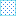

<!doctype html>
<html lang="en">
    <head>
        <meta charset="utf-8">
        <meta http-equiv="X-UA-Compatible" content="IE=edge">
        <meta name="viewport" content="initial-scale=1,user-scalable=no,maximum-scale=1,width=device-width">
        <meta name="mobile-web-app-capable" content="yes">
        <meta name="apple-mobile-web-app-capable" content="yes">
        <link rel="stylesheet" href="css/leaflet.css">
        <link rel="stylesheet" href="css/qgis2web.css"><link rel="stylesheet" href="css/fontawesome-all.min.css">
        <style>
        #map {
            width: 1012px;
            height: 1203px;
        }
        </style>
        <title></title>
    </head>
    <body>
        <div id="map">
        </div>
        <script src="js/qgis2web_expressions.js"></script>
        <script src="js/leaflet.js"></script>
        <script src="js/leaflet.rotatedMarker.js"></script>
        <script src="js/leaflet.pattern.js"></script>
        <script src="js/leaflet-hash.js"></script>
        <script src="js/Autolinker.min.js"></script>
        <script src="js/rbush.min.js"></script>
        <script src="js/labelgun.min.js"></script>
        <script src="js/labels.js"></script>
        <script src="data/MarinePrioritizationAreas_1.js"></script>
        <script src="data/IntactMangroves_2.js"></script>
        <script>
        var map = L.map('map', {
            zoomControl:true, maxZoom:28, minZoom:1
        }).fitBounds([[15.068273263340359,-93.50777539242698],[23.66154146934837,-85.83880159603083]]);
        var hash = new L.Hash(map);
        map.attributionControl.setPrefix('<a href="https://github.com/tomchadwin/qgis2web" target="_blank">qgis2web</a> &middot; <a href="https://leafletjs.com" title="A JS library for interactive maps">Leaflet</a> &middot; <a href="https://qgis.org">QGIS</a>');
        var bounds_group = new L.featureGroup([]);
        function setBounds() {
        }
        var layer_GoogleSatellite_0 = L.tileLayer('https://mt1.google.com/vt/lyrs=s&x={x}&y={y}&z={z}', {
            opacity: 1.0,
            attribution: '',
            minZoom: 1,
            maxZoom: 28,
            minNativeZoom: 0,
            maxNativeZoom: 19
        });
        layer_GoogleSatellite_0;
        map.addLayer(layer_GoogleSatellite_0);
        function pop_MarinePrioritizationAreas_1(feature, layer) {
            var popupContent = '<table>\
                    <tr>\
                        <td colspan="2">' + (feature.properties['AREA'] !== null ? Autolinker.link(String(feature.properties['AREA'])) : '') + '</td>\
                    </tr>\
                    <tr>\
                        <td colspan="2">' + (feature.properties['PERIMETER'] !== null ? Autolinker.link(String(feature.properties['PERIMETER'])) : '') + '</td>\
                    </tr>\
                    <tr>\
                        <td colspan="2">' + (feature.properties['COV_'] !== null ? Autolinker.link(String(feature.properties['COV_'])) : '') + '</td>\
                    </tr>\
                    <tr>\
                        <td colspan="2">' + (feature.properties['COV_ID'] !== null ? Autolinker.link(String(feature.properties['COV_ID'])) : '') + '</td>\
                    </tr>\
                    <tr>\
                        <td colspan="2">' + (feature.properties['REGION_ID'] !== null ? Autolinker.link(String(feature.properties['REGION_ID'])) : '') + '</td>\
                    </tr>\
                    <tr>\
                        <td colspan="2">' + (feature.properties['REGION'] !== null ? Autolinker.link(String(feature.properties['REGION'])) : '') + '</td>\
                    </tr>\
                    <tr>\
                        <td colspan="2">' + (feature.properties['PROVINCIA'] !== null ? Autolinker.link(String(feature.properties['PROVINCIA'])) : '') + '</td>\
                    </tr>\
                    <tr>\
                        <td colspan="2">' + (feature.properties['BIODIV'] !== null ? Autolinker.link(String(feature.properties['BIODIV'])) : '') + '</td>\
                    </tr>\
                    <tr>\
                        <td colspan="2">' + (feature.properties['AMENAZA'] !== null ? Autolinker.link(String(feature.properties['AMENAZA'])) : '') + '</td>\
                    </tr>\
                    <tr>\
                        <td colspan="2">' + (feature.properties['USO'] !== null ? Autolinker.link(String(feature.properties['USO'])) : '') + '</td>\
                    </tr>\
                    <tr>\
                        <td colspan="2">' + (feature.properties['INFORMA'] !== null ? Autolinker.link(String(feature.properties['INFORMA'])) : '') + '</td>\
                    </tr>\
                </table>';
            layer.bindPopup(popupContent, {maxHeight: 400});
        }

        function style_MarinePrioritizationAreas_1_0() {
            return {
                pane: 'pane_MarinePrioritizationAreas_1',
                opacity: 1,
                color: 'rgba(44,203,227,1.0)',
                dashArray: '',
                lineCap: 'butt',
                lineJoin: 'miter',
                weight: 1.0, 
                fill: true,
                fillOpacity: 1,
                fillColor: 'rgba(44,133,227,1.0)',
                interactive: true,
            }
        }
        map.createPane('pane_MarinePrioritizationAreas_1');
        map.getPane('pane_MarinePrioritizationAreas_1').style.zIndex = 401;
        map.getPane('pane_MarinePrioritizationAreas_1').style['mix-blend-mode'] = 'normal';
        var layer_MarinePrioritizationAreas_1 = new L.geoJson(json_MarinePrioritizationAreas_1, {
            attribution: '',
            interactive: true,
            dataVar: 'json_MarinePrioritizationAreas_1',
            layerName: 'layer_MarinePrioritizationAreas_1',
            pane: 'pane_MarinePrioritizationAreas_1',
            onEachFeature: pop_MarinePrioritizationAreas_1,
            style: style_MarinePrioritizationAreas_1_0,
        });
        bounds_group.addLayer(layer_MarinePrioritizationAreas_1);
        map.addLayer(layer_MarinePrioritizationAreas_1);
        function pop_IntactMangroves_2(feature, layer) {
            var popupContent = '<table>\
                    <tr>\
                        <td colspan="2">' + (feature.properties['Clase'] !== null ? Autolinker.link(String(feature.properties['Clase'])) : '') + '</td>\
                    </tr>\
                    <tr>\
                        <td colspan="2">' + (feature.properties['Fecha'] !== null ? Autolinker.link(String(feature.properties['Fecha'])) : '') + '</td>\
                    </tr>\
                    <tr>\
                        <td colspan="2">' + (feature.properties['ha'] !== null ? Autolinker.link(String(feature.properties['ha'])) : '') + '</td>\
                    </tr>\
                    <tr>\
                        <td colspan="2">' + (feature.properties['Descrip'] !== null ? Autolinker.link(String(feature.properties['Descrip'])) : '') + '</td>\
                    </tr>\
                    <tr>\
                        <td colspan="2">' + (feature.properties['COV_'] !== null ? Autolinker.link(String(feature.properties['COV_'])) : '') + '</td>\
                    </tr>\
                    <tr>\
                        <td colspan="2">' + (feature.properties['COV_ID'] !== null ? Autolinker.link(String(feature.properties['COV_ID'])) : '') + '</td>\
                    </tr>\
                </table>';
            layer.bindPopup(popupContent, {maxHeight: 400});
        }

        function style_IntactMangroves_2_0() {
            return {
                pane: 'pane_IntactMangroves_2',
                opacity: 1,
                color: 'rgba(44,203,227,0.0)',
                dashArray: '',
                lineCap: 'butt',
                lineJoin: 'miter',
                weight: 1.0, 
                fill: true,
                fillOpacity: 1,
                fillColor: 'rgba(182,227,44,1.0)',
                interactive: true,
            }
        }
        map.createPane('pane_IntactMangroves_2');
        map.getPane('pane_IntactMangroves_2').style.zIndex = 402;
        map.getPane('pane_IntactMangroves_2').style['mix-blend-mode'] = 'normal';
        var layer_IntactMangroves_2 = new L.geoJson(json_IntactMangroves_2, {
            attribution: '',
            interactive: true,
            dataVar: 'json_IntactMangroves_2',
            layerName: 'layer_IntactMangroves_2',
            pane: 'pane_IntactMangroves_2',
            onEachFeature: pop_IntactMangroves_2,
            style: style_IntactMangroves_2_0,
        });
        bounds_group.addLayer(layer_IntactMangroves_2);
        map.addLayer(layer_IntactMangroves_2);
        var baseMaps = {};
        L.control.layers(baseMaps,{' Intact Mangroves': layer_IntactMangroves_2,' Marine Prioritization Areas': layer_MarinePrioritizationAreas_1,"Google Satellite": layer_GoogleSatellite_0,},{collapsed:false}).addTo(map);
        setBounds();
        </script>
    </body>
</html>
